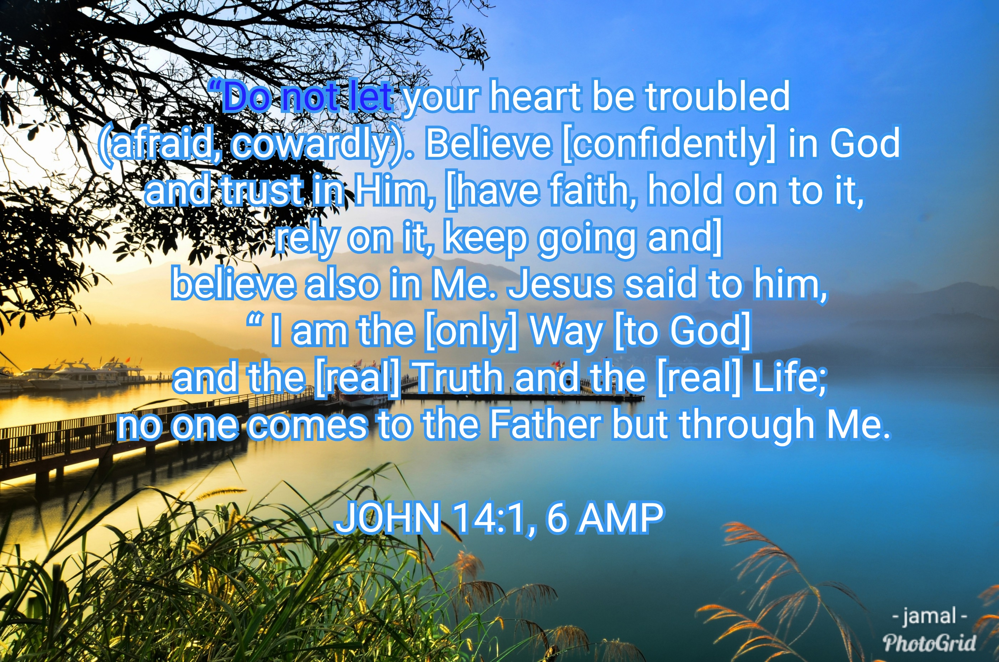

Jump to...
...section here
1. Sinful and produces fear.
2. A disease causing other ills.
3. Borrowing trouble that cannot be paid back.
4. Brooding over what may not happen
5. A disgrace to God and should never be indulged in by Christians.
6. A burden borrowed from tomorrow and others who should carry it.
7. A robber of faith, peace and trust in a never failing heavenly Father.
8. Torment over something that would likely be a blessing if it comes.
9. Anticipating troubles which seldom comes to those who trust God.
10. Needless and wastes time and effort that should be spent on worth-while things.
11. Weight that kills prematurely.
12. A stumbling-block to others.
13. Creating trouble, misery and death.
14. Anxiety over what is nothing today and less tomorrow.
15. A grave-digger that has no sympathy.
16. Mental and physical suicide.
17. Living like an orphan without an Heavenly Father.
18. A crime against God, man, nature, and better judgement.
19. Mental cruelty to self and others.
20. Foolish for whatever is going to happen cannot be supported by worry; and if it dosen't happen, there is nothing to worry about. Should adversities actually come, one may still be victorious by trusting in God.
The Cure for Worry

1. Renounce ALL worry and by prayer, supplication, and thanksgiving make ALL requests known to God...
Do not be anxious or worried about anything, but in everything [every circumstance and situation] by prayer and petition with thanksgiving, continue to make your [specific] requests known to God.
So submit to [the authority of] God. Resist the devil [stand firm against him] and he will flee from you. Come close to God [with a contrite heart] and He will come close to you. Wash your hands, you sinners; and purify your [unfaithful] hearts, you double-minded [people].
2. Permit the peace of God to garrison or keep your mind and heart through Christ Jesus...
And the peace of God [that peace which reassures the heart, that peace] which transcends all understanding, [that peace which] stands guard over your hearts and your minds in Christ Jesus [is yours].
3. Think on the right things...
Finally, believers, whatever is true, whatever is honorable and worthy of respect, whatever is right and confirmed by God’s word, whatever is pure and wholesome, whatever is lovely and brings peace, whatever is admirable and of good repute; if there is any excellence, if there is anything worthy of praise, think continually on these things [center your mind on them, and implant them in your heart].
4. Keep your mind stayed on God...
“You will keep in perfect and constant peace the one whose mind is steadfast [that is, committed and focused on You--in both inclination and character], Because he trusts and takes refuge in You [with hope and confident expectation]. “Trust [confidently] in the Lord forever [He is your fortress, your shield, your banner], For the Lord God is an everlasting Rock [the Rock of Ages].

5. Use the weapons of spiritual warfare...
For though we walk in the flesh [as mortal men], we are not carrying on our [spiritual] warfare according to the flesh and using the weapons of man. The weapons of our warfare are not physical [weapons of flesh and blood]. Our weapons are divinely powerful for the destruction of fortresses. We are destroying sophisticated arguments and every exalted and proud thing that sets itself up against the [true] knowledge of God, and we are taking every thought and purpose captive to the obedience of Christ, being ready to punish every act of disobedience, when your own obedience [as a church] is complete.
6. Put on the whole armour of God...
In conclusion, be strong in the Lord [draw your strength from Him and be empowered through your union with Him] and in the power of His [boundless] might. Put on the full armor of God [for His precepts are like the splendid armor of a heavily-armed soldier], so that you may be able to [successfully] stand up against all the schemes and the strategies and the deceits of the devil. For our struggle is not against flesh and blood [contending only with physical opponents], but against the rulers, against the powers, against the world forces of this [present] darkness, against the spiritual forces of wickedness in the heavenly (supernatural) places. Therefore, put on the complete armor of God, so that you will be able to [successfully] resist and stand your ground in the evil day [of danger], and having done everything [that the crisis demands], to stand firm [in your place, fully prepared, immovable, victorious]. So stand firm and hold your ground, having tightened the wide band of truth (personal integrity, moral courage) around your waist and having put on the breastplate of righteousness (an upright heart), and having strapped on your feet the gospel of peace in preparation [to face the enemy with firm-footed stability and the readiness produced by the good news]. Above all, lift up the [protective] shield of faith with which you can extinguish all the flaming arrows of the evil one. And take the helmet of salvation , and the sword of the Spirit, which is the Word of God. With all prayer and petition pray [with specific requests] at all times [on every occasion and in every season] in the Spirit, and with this in view, stay alert with all perseverance and petition [interceding in prayer] for all God’s people. And pray for me, that words may be given to me when I open my mouth, to proclaim boldly the mystery of the good news [of salvation],...
7. Have faith in God...
The Cure for Worry
“Therefore I tell you, stop being worried or anxious (perpetually uneasy, distracted) about your life, as to what you will eat or what you will drink; nor about your body, as to what you will wear. Is life not more than food, and the body more than clothing? Look at the birds of the air; they neither sow [seed] nor reap [the harvest] nor gather [the crops] into barns, and yet your heavenly Father keeps feeding them. Are you not worth much more than they? And who of you by worrying can add one hour to [the length of] his life? And why are you worried about clothes? See how the lilies and wildflowers of the field grow; they do not labor nor do they spin [wool to make clothing], yet I say to you that not even Solomon in all his glory and splendor dressed himself like one of these. But if God so clothes the grass of the field, which is alive and green today and tomorrow is [cut and] thrown [as fuel] into the furnace, will He not much more clothe you? You of little faith! Therefore do not worry or be anxious (perpetually uneasy, distracted), saying, ‘What are we going to eat?’ or ‘What are we going to drink?’ or ‘What are we going to wear?’ For the [pagan] Gentiles eagerly seek all these things; [but do not worry,] for your heavenly Father knows that you need them. But first and most importantly seek (aim at, strive after) His kingdom and His righteousness [His way of doing and being right--the attitude and character of God], and all these things will be given to you also. “So do not worry about tomorrow; for tomorrow will worry about itself. Each day has enough trouble of its own.
Prayer and the Golden Rule
“Ask and keep on asking and it will be given to you; seek and keep on seeking and you will find; knock and keep on knocking and the door will be opened to you. For everyone who keeps on asking receives, and he who keeps on seeking finds, and to him who keeps on knocking, it will be opened. Or what man is there among you who, if his son asks for bread, will [instead] give him a stone? Or if he asks for a fish, will [instead] give him a snake? If you then, evil (sinful by nature) as you are, know how to give good and advantageous gifts to your children, how much more will your Father who is in heaven [perfect as He is] give what is good and advantageous to those who keep on asking Him. “So then, in everything treat others the same way you want them to treat you, for this is [the essence of] the Law and the [writings of the] Prophets.
He answered, “Because of your little faith [your lack of trust and confidence in the power of God]; for I assure you and most solemnly say to you, if you have [living] faith the size of a mustard seed, you will say to this mountain, ‘Move from here to there,’ and [if it is God’s will] it will move; and nothing will be impossible for you.
And whatever you ask for in prayer, believing, you will receive.
Jesus replied, “Have faith in God [constantly]. I assure you and most solemnly say to you, whoever says to this mountain, ‘Be lifted up and thrown into the sea!’ and does not doubt in his heart [in God’s unlimited power], but believes that what he says is going to take place, it will be done for him [in accordance with God’s will]. For this reason I am telling you, whatever things you ask for in prayer [in accordance with God’s will], believe [with confident trust] that you have received them, and they will be given to you. Whenever you stand praying, if you have anything against anyone, forgive him [drop the issue, let it go], so that your Father who is in heaven will also forgive you your transgressions and wrongdoings [against Him and others]. [But if you do not forgive, neither will your Father in heaven forgive your transgressions.”]
8. Live and walk in the Spirit
But I say, walk habitually in the [Holy] Spirit [seek Him and be responsive to His guidance], and then you will certainly not carry out the desire of the sinful nature [which responds impulsively without regard for God and His precepts]. For the sinful nature has its desire which is opposed to the Spirit, and the [desire of the] Spirit opposes the sinful nature; for these [two, the sinful nature and the Spirit] are in direct opposition to each other [continually in conflict], so that you [as believers] do not [always] do whatever [good things] you want to do. But if you are guided and led by the Spirit, you are not subject to the Law. Now the practices of the sinful nature are clearly evident: they are sexual immorality, impurity, sensuality (total irresponsibility, lack of self-control), idolatry, sorcery, hostility, strife, jealousy, fits of anger, disputes, dissensions, factions [that promote heresies], envy, drunkenness, riotous behavior, and other things like these. I warn you beforehand, just as I did previously, that those who practice such things will not inherit the kingdom of God. But the fruit of the Spirit [the result of His presence within us] is love [unselfish concern for others], joy, [inner] peace, patience [not the ability to wait, but how we act while waiting], kindness, goodness, faithfulness, gentleness, self-control. Against such things there is no law. And those who belong to Christ Jesus have crucified the sinful nature together with its passions and appetites. If we [claim to] live by the [Holy] Spirit, we must also walk by the Spirit [with personal integrity, godly character, and moral courage--our conduct empowered by the Holy Spirit]. We must not become conceited, challenging or provoking one another, envying one another.
Therefore do not let sin reign in your mortal body so that you obey its lusts and passions. Do not go on offering members of your body to sin as instruments of wickedness. But offer yourselves to God [in a decisive act] as those alive [raised] from the dead [to a new life], and your members [all of your abilities--sanctified, set apart] as instruments of righteousness [yielded] to God.
And He condemned sin in the flesh [subdued it and overcame it in the person of His own Son], so that the [righteous and just] requirement of the Law might be fulfilled in us who do not live our lives in the ways of the flesh [guided by worldliness and our sinful nature], but [live our lives] in the ways of the Spirit [guided by His power]. For those who are living according to the flesh set their minds on the things of the flesh [which gratify the body], but those who are living according to the Spirit, [set their minds on] the things of the Spirit [His will and purpose]. Now the mind of the flesh is death [both now and forever--because it pursues sin]; but the mind of the Spirit is life and peace [the spiritual well-being that comes from walking with God--both now and forever]; the mind of the flesh [with its sinful pursuits] is actively hostile to God. But if [you are living] by the [power of the Holy] Spirit you are habitually putting to death the sinful deeds of the body, you will [really] live forever . For all who are allowing themselves to be led by the Spirit of God are sons of God.
9. Do not cast away confidence
but Christ is faithful as a Son over His [Father’s] house. And we are His house if we hold fast our confidence and sense of triumph in our hope [in Christ]. Therefore, just as the Holy Spirit says, “Today if you hear His voice , Take care, brothers and sisters, that there not be in any one of you a wicked, unbelieving heart [which refuses to trust and rely on the Lord, a heart] that turns away from the living God. But continually encourage one another every day, as long as it is called “Today” [and there is an opportunity], so that none of you will be hardened [into settled rebellion] by the deceitfulness of sin [its cleverness, delusive glamour, and sophistication]. For we [believers] have become partakers of Christ [sharing in all that the Messiah has for us], if only we hold firm our newborn confidence [which originally led us to Him] until the end,
HEBREWS 3:6-7, 12-14 AMP
And we desire for each one of you to show the same diligence [all the way through] so as to realize and enjoy the full assurance of hope until the end, so that you will not be [spiritually] sluggish, but [will instead be] imitators of those who through faith [lean on God with absolute trust and confidence in Him and in His power] and by patient endurance [even when suffering] are [now] inheriting the promises.
Therefore, believers, since we have confidence and full freedom to enter the Holy Place [the place where God dwells] by [means of] the blood of Jesus, by this new and living way which He initiated and opened for us through the veil [as in the Holy of Holies], that is, through His flesh, and since we have a great and wonderful Priest [Who rules] over the house of God, let us approach [God] with a true and sincere heart in unqualified assurance of faith, having had our hearts sprinkled clean from an evil conscience and our bodies washed with pure water. Let us seize and hold tightly the confession of our hope without wavering, for He who promised is reliable and trustworthy and faithful [to His word]; and let us consider [thoughtfully] how we may encourage one another to love and to do good deeds, not forsaking our meeting together [as believers for worship and instruction], as is the habit of some, but encouraging one another; and all the more [faithfully] as you see the day [of Christ’s return] approaching.
Do not, therefore, fling away your [fearless] confidence, for it has a glorious and great reward. For you have need of patient endurance [to bear up under difficult circumstances without compromising], so that when you have carried out the will of God, you may receive and enjoy to the full what is promised. For yet in a very little while , He who is coming will come , and will not delay . But My righteous one [the one justified by faith] shall live by faith [respecting man’s relationship to God and trusting Him]; And if he draws back [shrinking in fear], My soul has no delight in him. But our way is not that of those who shrink back to destruction, but [we are] of those who believe [relying on God through faith in Jesus Christ, the Messiah] and by this confident faith preserve the soul.
10. Cast all care upon God
Therefore humble yourselves under the mighty hand of God [set aside self-righteous pride], so that He may exalt you [to a place of honor in His service] at the appropriate time, casting all your cares [all your anxieties, all your worries, and all your concerns, once and for all] on Him, for He cares about you [with deepest affection, and watches over you very carefully]. Be sober [well balanced and self-disciplined], be alert and cautious at all times. That enemy of yours, the devil, prowls around like a roaring lion [fiercely hungry], seeking someone to devour. But resist him, be firm in your faith [against his attack--rooted, established, immovable], knowing that the same experiences of suffering are being experienced by your brothers and sisters throughout the world. [You do not suffer alone.] After you have suffered for a little while, the God of all grace [who imparts His blessing and favor], who called you to His own eternal glory in Christ, will Himself complete, confirm, strengthen, and establish you [making you what you ought to be].To Him be dominion (power, authority, sovereignty) forever and ever. Amen.
...and DO NOT LET your heart be troubled

6 Things to Meditate on
worry
- Because it shows lack of faith in God (Mat.6:25-34)
- Because it is forbidden by God (Mat6:34 Phil4:6-7)
- Because it destroys the body (ulcers) (1Cor6:19)
- Christ came to die for and deal with sin; therefore can be overcome,
- By the power of the Holy Spirit,
- Whose instructions for doing so are found in the Bible.
- And may not simply be turned off
- It must be replaced by a proper manifestation of this emotion
- Worry is the focus of concern upon the wrong day - tomorrow:
- Mobilizing energies that cannot be released productively (tomorrow is not here)
- And leading to a tired but dissatisfied feeling (tensions, chemicals work on counselee).
- Energies can be released productively (on present tasks),
- Leading to a tired but satisfied feeling.
- One makes plans for tomorrow,
- Submits them to God for His bluepenciling,
- And leaves the outcome entirely to God (James4:13-17; cf. Phil4:6-7)
- And when he determines each day how many trees he can chop down
- Faithfully takes these down each day, no matter how he feels
- And eventually cuts a pathway through the woods, with daylight appearing before long.
- To schedule his daily work
- According to God's priorities
- In order to avoid periods of brooding
- To follow the schedule
- Rather than feelings,
- To build Godly responsibility,
- And to avoid cowardly and fearful actions